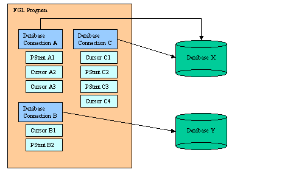

Summary:
See also: Transactions, Static SQL, Dynamic SQL, Result Sets, SQL Errors, SQL Warnings, Programs.
A Database Connection is a session of work, opened by the program to communicate with a specific database server, in order to execute SQL statements as a specific user.
Warning: Before working with database connections, make sure you have properly installed and configured Genero BDL, using the correct database client environment and driver. It is very important to understand database client settings, regarding user authentication as well as database client character set configuration.
Schema example of BDL program using three database connections:

The database user can be identified explicitly for each connection. Usually, the user is identified by a login and a password, or by using the authentication mechanism of the operating system (or even from a tier security system).
The database connection instructions can not be prepared as Dynamic SQL statements; they must be static SQL statements.
There are two kind of connection modes: unique-session and multi-session mode. When using the DATABASE and CLOSE DATABASE instructions, you are in unique-session mode. When using the CONNECT TO, SET CONNECTION and DISCONNECT instructions you are in multi-session mode. The modes are not compatible. It is strongly recommended that you choose the session mode and not mix both kinds of instructions.
In unique-session mode, you simply connect with the DATABASE instruction; that creates a current session. You disconnect from the current session with the CLOSE DATABASE instruction, or when another DATABASE instruction is executed, or when the program ends.
In multi-session mode, you open a session with the CONNECT TO instruction; that creates a current session. You can open other connections with subsequent CONNECT TO instructions. To switch to a specific session, use the SET CONNECTION instruction; this suspends other opened connections. Finally, you disconnect from the current, from a specific, or from all sessions with the DISCONNECT instruction. The end of the program disconnects all sessions automatically.
Once connected to a database server, you have a current database session. Any subsequent SQL statement is executed in the context of the current database session.
The database specification identifies the SQL data server and the database entity the Genero BDL program must connect to in order to execute SQL statements to read from or modify the database tables.
Depending on the database server type, there are different ways to specify the SQL data source. For example, when you connect to Oracle, you cannot specify the database server as you do with IBM Informix by using the 'dbname@dbserver' notation. At some point you will have to specify the database driver to be loaded, the database server (INFORMIXSERVER, ORACLE_SID/TNSNAME, SQL Server instance), the name of the database (or database schema, if the server does not support the concept of individual database entities), and if user authentication is needed, the database user, with a login and password.
Warning: There are different ways to give connection information and it is possible to mix the different methods to specify these parameters. However, if provided, the database user name and password have to be specified together with the same method.
The database specification is provided in Genero BDL programs by the DATABASE or CONNECT TO instruction. We recommend you to use the CONNECT TO instruction, as it allows to specify a user and password):
CONNECT TO dbspec [USER username USING password]or
DATABASE dbspec
For portability reasons, it is not recommended that you use database vendor specific syntax (such as 'dbname@dbserver') in the DATABASE or CONNECT TO instructions. We recommend using a simple symbol instead, and configuring the connection parameters in external resource files. The Open Database Interface architecture allows this indirect database specification using entries from the FGLPROFILE configuration file.
When a DATABASE
or CONNECT TO instruction is executed with the parameter dbspec, the runtime system first looks
into FGLPROFILE for entries starting with dbi.database.dbspec,
and uses indirect database specification if such
connection parameters are found. Otherwise, the runtime system will do direct
database specification, by using the dbspec database specification to
connect to the server.
Warning: When using FGLPROFILE entries for database specification, keep in mind that entries must be written in lowercase. See FGLPROFILE for more details.
The next FGLPROFILE entry defines a default database driver to be loaded, if the driver is not specified by the connection instruction:
dbi.default.driver = "driver-name"
Here driver-name must be a value database driver name, without the .so or .DLL extension. See database driver list for possible values.
If the above configuration entry is not defined, the driver name defaults to dbmdefault.
When using the DATABASE instruction, you can define an FGLPROFILE entry with the name of a function to be called when the DATABASE instruction is executed, in order to let you provide a user name and password for the database connection.
dbi.default.userauth.callback = "[module-name.]function-name"
Warning: This callback method is not a password encryption solution, it is only provided as workaround to let you provide a user name and password for the database connection initiated by DATABASE instructions without modifying existing programs. You should use the CONNECT TO instruction with the USER/USING clause instead. This feature is provided mainly for non-IBM Informix drivers, when a lot of legacy code is using the DATABASE instruction. When using the IBM Informix driver, the callback method is called, but the user name and password are ignored by the DATABASE instruction: Only CONNECT TO will take the login parameters into account for IBM Informix.
The callback function must have the following signature:
CALL function-name(dbspec STRING)
RETURNING STRING (username), STRING (password)
If you do not specify the module name, the callback function must be linked to the 42r program. By using the "module-name.function-name" syntax in the FGLPROFILE entry, the runtime system will automatically load the module. In both cases, the module must be located in a directory where the runtime system can find it. See the FGLLDPATH environment variable for more details.
You typically use the value of dbspec to identify the database source, read username and encrypted password from FGLPROFILE entries with the fgl_getResource() function, then decrypt password with the algorithm of your choice and return username and decrypted password.
Callback function example:
01FUNCTION getUserAuth(dbspec)02DEFINE dbspec STRING03DEFINE un, ep STRING04LET un = fgl_getResource("dbi.database."||dbspec||".username") -- standard entry05LET ep = fgl_getResource("dbi.database."||dbspec||".password.encrypted") -- custom entry06RETURN un, decrypt_user_password(dbspec, un, ep)07END FUNCTION
This section describes the different parameters which need to be specified in order to connect to a database. The parameters can be provided with different methods (in the connection string or in FGLPROFILE settings). Some of these parameters are optional, for example if the database user is authenticated by the operating system, username/password parameters are not needed.
The "source" parameter identifies the data source name. The following table describes the meaning of this parameter for the supported databases:
| Database Type | Value of "source" entry | Description |
| Genero db | datasource | ODBC Data Source |
| Generic ODBC | datasource | ODBC Data Source |
| IBM Informix | dbname[@dbserver] | IBM Informix database specification |
| IBM DB2 | dsname | DB2 Catalogued Database |
| MySQL | dbname[@host[:port]] or dbname[@localhost~socket] |
Database Name @ Host Name :
TCP Port or Database Name @ Local host ~ Unix socket file |
| ORACLE | tnsname | Oracle TNS Service name |
| PostgreSQL | dbname[@host[:port]] | Database Name @ Host Name : TCP Port |
| SQL Server | datasource | ODBC Data Source |
| SQLite | filename | Database file path |
| Sybase Adaptive Server Enterprise (ASE) | dbname[@engine] | Database Name @ Engine Name |
| Sybase Adaptive Server Anywhere (ASA) | dbname[@engine] | Database Name @ Engine Name |
If the "source" parameter is defined with an empty value (""), the database interface connects to the default database server, which is usually the local server.
If the "source" entry is not present in FGLPROFILE, the Direct Database Specification method takes place.
The "driver" parameter identifies the type of database driver to be loaded. Here you specify the name of the shared library or DLL to be used, without the .so or .DLL exntesion.
Warning: Driver file names do not have to be specified with a file extension.
For example:
dbi.database.stores.driver = "dbmifx9x"
You can define a default driver with the Default Database Driver FGLPROFILE entry. If this entry is not defined, and if no driver parameter is defined for the data source, the driver name defaults to dbmdefault. The default driver dbmdefault is a copy of a specific driver type that was chosen during Genero BDL installation.
The shared libraries implementing Genero BDL database drivers are located in FGLDIR/dbdrivers on both UNIX and Windows platforms. Some drivers may not be available on a specific platform (usually, because the target database client does not exist on that platform). See below for a complete list of available drivers. Contact your support if you do not find the driver you are looking for.
Warning: The selected driver must correspond to the database client type and version. For example, you should not use a dbmads380 driver with Genero 3.81.
| Driver names | Type | Database client software version | Unix shared libraries | Microsoft Windows DLLs |
| dbmads3x | ads | Genero db Client 3.x | libaodbc.so | aodbc.dll |
| dbmads380 | ads | Genero db Client 3.80 and higher | libaodbc.so | aodbc.dll |
| dbmads381 | ads | Genero db Client 3.81 and higher | libaodbc.so | aodbc.dll |
| dbmasa8x | asa | Sybase ASA Client 8.x | libdblib8.so | dblibtm.dll |
| dbmase0Fx | ase | Sybase ASE Open Client Library 15.x | libsybct.so, libsybcs.so | libsybct.dll, libsybcs.dll |
| dbmdb28x | db2 | DB2 Client 8.x | libdb2.so | db2cli.dll |
| dbmdb29x | db2 | DB2 Client 9.x | libdb2.so | db2cli.dll |
| dbmesm90 | esm | EasySoft ODBC client for SQL Server 2005 | libessqlsrv.so | N/A |
| dbmesmA0 | esm | EasySoft ODBC client for SQL Server 2008 | libessqlsrv.so | N/A |
| dbmifx9x | ifx | IBM Informix CSDK 2.80 and higher | libifsql.so, libifasf.so, libifgen.so, libifos.so, libifgls.so, libifglx.so | isqlt09a.dll |
| dbmmys50x | mys | MySQL Client 5.0.x | libmysqlclient.so | libmysql.dll |
| dbmmys51x | mys | MySQL Client 5.1.x | libmysqlclient.so | libmysql.dll |
| dbmmys54x | mys | MySQL Client 5.4.x | libmysqlclient.so | libmysql.dll |
| dbmmys55x | mys | MySQL Client 5.5.x | libmysqlclient.so | libmysql.dll |
| dbmmys60x | mys | MySQL Client 6.0.x | libmysqlclient.so | libmysql.dll |
| dbmmsv80 | msv | SQL Server Client 8.x (MDAC ODBC) (SQL Server 2000) | N/A | odbc32.dll / SQLSRV32.DLL |
| dbmmsv90 | msv | SQL Server Client 9.x (MDAC ODBC) (SQL Server 2005) | N/A | odbc32.dll / SQLSRV32.DLL |
| dbmodc3x | odc | Generic ODBC Client (ODBC 3.x) | libodbc.so | odbc32.dll |
| dbmora81x | ora | Oracle OCI Client 8.1.x | libclntsh.so | oci.dll |
| dbmora82x | ora | Oracle OCI Client 8.2.x | libclntsh.so | oci.dll |
| dbmora92x | ora | Oracle OCI Client 9.2.x | libclntsh.so | oci.dll |
| dbmoraA1x | ora | Oracle OCI Client 10.1.x | libclntsh.so | oci.dll |
| dbmoraA2x | ora | Oracle OCI Client 10.2.x | libclntsh.so | oci.dll |
| dbmoraB1x | ora | Oracle OCI Client 11.1.x | libclntsh.so | oci.dll |
| dbmoraB2x | ora | Oracle OCI Client 11.2.x | libclntsh.so | oci.dll |
| dbmpgs81x | pgs | PostgreSQL Client 8.1.x | libpq.so | libpq.dll |
| dbmpgs82x | pgs | PostgreSQL Client 8.2.x | libpq.so | libpq.dll |
| dbmpgs83x | pgs | PostgreSQL Client 8.3.x | libpq.so | libpq.dll |
| dbmpgs84x | pgs | PostgreSQL Client 8.4.x | libpq.so | libpq.dll |
| dbmsnc90 | snc | SQL Server Client 9.x (SQL Native client) (SQL Server 2005) | N/A | odbc32.dll / SQLNCLI.DLL |
| dbmsncA0 | snc | SQL Server Client 10.x (SQL Native client) (SQL Server 2008) | N/A | odbc32.dll / SQLNCLI.DLL |
| dbmftm90 | ftm | FreeTDS ODBC client for SQL Server 2005 | libtdsodbc.so | N/A |
| dbmsqt3xx | sqt | SQLite 3.x | libsqlite3.so | sqtlite3.dll |
The "username" and "password" parameters define the default database user, when the program uses the DATABASE instruction or the CONNECT TO instruction without the USER clause.
Warning: The "username" and "password" FGLPROFILE entries are not encrypted. These parameters are provided to simplify migration and should not be used in production. You better use CONNECT TO with a USER / USING clause to avoid any security hole, setup OS user authentication or use the connection callback method. Example of database servers supporting OS user authentication: IBM Informix, Oracle, SQL Server and Genero db.
Warning: For backward compatibility reasons, when using the IBM Informix driver, the username / password specification is ignored by the DATABASE instruction, only the CONNECT TO instruction takes external (or callback) login parameters into account.
For more details about database login see Database user authentication.
For development or testing purpose, you can specify connection parameters in the database specification string used by the DATABASE and CONNECT TO instructions. We do not recommend to hardcode connection string parameters for a program to be installed on a production site, you should use the Indirect Database Specification method instead, or build the connection string at runtime to keep the database connection flexible.
Note that the connection string parameters override the dbi.database
connection parameters defined in FGLPROFILE.
A plus sign in the database specification starts the list of connection parameters. Each parameter is defined with a name followed by an equal sign an a value enclosed in single quotes. Connection string parameters must be separated by a comma:
dbname+parameter='value'[,...]
In the above syntax, parameter can be one of the following:
| Parameter | Description |
| resource | Specifies which 'dbi.database'
entries have to be read from the FGLPROFILE configuration
file. When this property is set, the database interface reads dbi.database.name.* entries, where name is the value specified for the resource parameter. |
| driver | Defines the database driver library to be loaded
(filename without extension). See Driver for more details. |
| source | Specifies the data source of the database (for example,
Oracle's TNS name). See Source for more details. |
| username | Defines the name of the database user. See Username/Password for more details. |
| password | Defines the password of the database user. See Username/Password for more details. Warning: You should not hardcode the user passwords in your sources! |
In the following example, driver, source and resource are specified in the connection string:
01MAIN02DEFINE db CHAR(50)03LET db = "stores+driver='dbmora',source='orcl',resource='ora'"04DATABASE db05...06END MAIN
You can use a string variable with the DATABASE or CONNECT TO statement, in order to specify the database source at runtime (to be loaded from your own configuration file or from an environment variable). This solution gives you the best flexibility.
01MAIN02DEFINE db, us, pwd CHAR(50)03LET db = arg_val(1)03LET us = arg_val(2)03LET pwd = arg_val(3)04CONNECT TO db USER us USING pwd05...06END MAIN
The Direct Database Specification method takes place when the database name used in the program is not used in FGLPROFILE to define the data source with a 'dbi.database.dbname.source' entry. In this case, the database specification used in the connection instruction is used as the data source.
This method is well known for standard IBM Informix drivers, where you directly specify the database name and, if needed, the IBM Informix server:
01MAIN02DATABASE stores@orion03...04END MAIN
In the next example, the database server is PostgreSQL. The string used in the connection instruction defines the PostgreSQL database (stock), the host (localhost), and the TCP service (5432) the postmaster is listening to. As PostgreSQL syntax is not allowed in standard BDL, a CHAR variable must be used:
01MAIN02DEFINE db CHAR(50)03LET db = "stock@localhost:5432"04DATABASE db05...06END MAIN
Indirect Database Specification method takes place when the database name used in the connection instruction corresponds to a 'dbi.database.dbname.source' entry defined in the FGLPROFILE configuration file. In this case, the dbname database specification is used as a key to read the connection information from the configuration file.
In FGLPROFILE, the entries starting with 'dbi.database' group information defining connection parameters for indirect database specification:
dbi.database.dbname.source = "value" dbi.database.dbname.driver = "value" dbi.database.dbname.username = "value" dbi.database.dbname.password = "value" -- Warning: not encrypted, do not use in production!Warning: FGLPROFILE entry names are converted to lower case when loaded by the runtime system. In order to avoid any mistakes, it is recommended to write FGLPROFILE entry names and program database names in lower case.
In the next example, the program specifies a data source with the name stores, and FGLPROFILE defines the source and driver parameters for the stores data source:
Program:
01MAIN02DATABASE stores03...04END MAIN
FGLPROFILE:
dbi.database.stores.source = "stock@localhost:5432" dbi.database.stores.driver = "dbmpgs721"
The indirect database specification technique is flexible: The database name in programs is a kind of alias for the real database which is defined in an external FGLPROFILE resource file, where entries can be easily changed on production sites without needing program re-compilation. For example, with this method, your can develop your application with the database name "stores" and connect to a database "stores1" in a production environment.
The source, driver, username/password entries are described in detail in Connection parameters.
To simplify the migration process to other databases, the database interface and drivers can emulate some IBM Informix-specific features like SERIAL columns and temporary tables; the drivers can also do some SQL syntax translation.
Warning: Avoid using IBM Informix emulations; write portable SQL code instead as described in SQL Programming. IBM Informix emulations are only provided to help you in the migration process. Disabling IBM Informix emulations improves performance, because SQL statements do not have to be parsed to search for IBM Informix-specific syntax.Emulations can be controlled with FGLPROFILE parameters. You can disable all possible switches step-by-step, in order to test your programs for SQL compatibility.
Global switch to enable or disable IBM Informix emulations:
dbi.database.dbname.ifxemul = { true | false }
Feature specific switches:
The 'ifxemul.datatype' switches define whether the specified data type must be converted to a native type (for example, when creating a table):
dbi.database.dbname.ifxemul.datatype.type = { true | false }
Here, type can be one of:
To control SERIAL generation type, you can use the following switch:
dbi.database.dbname.ifxemul.datatype.serial.emulation = { "native" | "regtable" | "trigseq" }
When using "native", the database driver creates a native sequence generator - it is fast, but not fully compatible to IBM Informix SERIAL. When using "regtable", you must have the SERIALREG table created - it is slower than the "native" emulation, but compatible to IBM Informix SERIAL. The serial emulation "trigseq", can be used by some database drivers, to use triggers with native sequence generators.
The 'temptables' switch can be used to control temporary table emulation:
dbi.database.dbname.ifxemul.temptables = { true | false }
The 'temptables.emulation' switch can be used to specify what type of tables must be used to emulate temporary tables:
dbi.database.dbname.ifxemul.temptables.emulation = { "default" | "global" }
The 'dblquotes' switch can be used to define whether double quoted strings must be converted to single quoted strings:
dbi.database.dbname.ifxemul.dblquotes = { true | false }
If this emulation is enabled, all double quoted strings are converted, including database object names.
The 'outers' switch can be used to control IBM Informix OUTER specification:
dbi.database.dbname.ifxemul.outers = { true | false }
It is better to use standard ISO outer joins in your SQL statements.
The 'today' switch can be used to convert the TODAY keyword to a native expression returning the current date:
dbi.database.dbname.ifxemul.today = { true | false }
The 'current' switch can be used to convert the CURRENT X TO Y expressions to a native expression returning the current time:
dbi.database.dbname.ifxemul.current = { true | false }
The 'selectunique' switch can be used to convert the SELECT UNIQUE to SELECT DISTINCT:
dbi.database.dbname.ifxemul.selectunique = { true | false }
It is better to replace all UNIQUE keywords by DISTINCT.
The 'colsubs' switch can be used to control column sub-strings expressions (col[x,y]) to native sub-string expressions:
dbi.database.dbname.ifxemul.colsubs = { true | false }
The 'matches' switch can be used to define whether MATCHES expressions must be converted to LIKE expressions:
dbi.database.dbname.ifxemul.matches = { true | false }
It is better to use the LIKE operator in your SQL statements.
The 'length' switch can be used to define whether LENGTH function names have to be converted to the native equivalent:
dbi.database.dbname.ifxemul.length = { true | false }
The 'rowid' switch can be used to define whether ROWID keywords have to be converted to native equivalent (for example, OID in PostgreSQL):
dbi.database.dbname.ifxemul.rowid = { true | false }
It is better to use primary keys instead.
The 'listupdate' switch can be used to convert the UPDATE statements using non-ANSI syntax:
dbi.database.dbname.ifxemul.listupdate = { true | false }
The 'extend' switch can be used to convert simple EXTEND() expressions to native date/time expressions:
dbi.database.dbname.ifxemul.extend = { true | false }
Some database vendor specific connection parameters can be configured by using FGLPROFILE entries with the following syntax:
dbi.database.dsname.dbtype.param.[.subparam] = "value"
The table below describes all database vendor specific parameters supported:
| Database Server | Parameters |
| Genero db | |
| dbi.database.dsname.ads.schema Name of the database schema to be selected after connection is established. Example: dbi.database.stores.ads.schema = "store2" Usage: Set this parameter to a specific schema in order to share the same table with all users. |
|
| dbi.database.dsname.ads.compatibility.check Defines the server compatibility checking at connection time. Example: dbi.database.stores.ads.compatibility.check = "INFORMIX" Usage: This entry can be used to bypass the COMPATIBILITY_MODE server parameter checking when connecting to the database. By default (starting with the 3.80 driver) COMPATIBILITY_MODE must be INFORMIX. Using "none" will bypass the checking; Any other value will force database compatibility mode checking. Default is "INFORMIX". |
|
| dbi.database.dsname.ads.driver.mode Defines the driver mode, to make the driver behave like an older driver version. Example: dbi.database.stores.ads.driver.mode = "3.61" Usage: This entry can be set to a specific Genero db version, to force the driver to use the IBM Informix emulations of an older driver version. For example, when using a driver for 3.80, the default mode is "3.80" and the new native DATETIME and/or INTERVAL types are used. If you want to use the old DATETIME / INTERVAL emulation, set the above entry to "3.61". |
|
| IBM DB2 | |
| dbi.database.dsname.db2.schema Name of the database schema to be selected after connection is established. Example: dbi.database.stores.db2.schema = "store2" Usage: Set this parameter to a specific schema in order to share the same table with all users. |
|
| dbi.database.dsname.db2.prepare.deferred True/False Boolean to enable/disable deferred prepare. Example: dbi.database.stores.db2.prepare.deferred = true Usage: Set this parameter to true if you do not need to get SQL errors during PREPARE statements: SQL statements will be sent to the server when executing the statement (OPEN or EXECUTE). The default is false (SQL statements are sent to the server when doing the PREPARE). |
|
| ORACLE | |
| dbi.database.dsname.ora.schema Name of the database schema to be selected after connection is established. Example: dbi.database.stores.ora.schema = "store2" Usage: Set this parameter to a specific schema in order to share the same table with all users. |
|
| dbi.database.dsname.ora.prefetch.rows Maximum number of rows to be pre-fetched. Example: dbi.database.stores.ora.prefetch.rows = 50 Usage: You can use this parameter to increase performance by defining the maximum number of rows to be fetched automatically. However, the bigger this parameter is, the more memory is used by each program. This parameter applies to all cursors in the application. The default is 10 rows. |
|
| dbi.database.dsname.ora.prefetch.memory Maximum buffer size for pre-fetching (in bytes). Example: dbi.database.stores.ora.prefetch.memory = 4096 Usage: This parameter is equivalent to prefetch.rows, but here you can specify the memory size instead of the number of rows. As prefetch.rows, this parameter applies to all cursors in the application. The default is 0, which means that memory size is not included in computing the number of rows to pre-fetch. |
|
| dbi.database.dsname.ora.sid.command SQL command (SELECT) to generate a unique session id (used for temp table names). Example: dbi.database.stores.ora.sid.command = "SELECT TO_CHAR(SID)||'_'||TO_CHAR(SERIAL#) FROM V$SESSION WHERE AUDSID=USERENV('SESSIONID')" Usage: By default the driver uses "SELECT USERENV('SESSIONID') FROM DUAL". This is the standard session identifier in Oracle, but it can become a very large number and can't be reset. This parameter gives you the freedom to provide your own way to generate a session id. The SELECT statement must return a single row with one single column. Value can be an integer or an identifier. |
|
| dbi.database.dsname.ora.cursor.scroll.emul Switch to enable scrollable cursor emulation to workaround Oracle bugs. Example: dbi.database.stores.ora.cursor.scroll.emul = true Usage: A lot of customers have reported bugs with native Oracle scrollable cursors. To workaround these bugs, you can set this entry and enable client-side scrollable cursors emulation. You should however use native scroll cursors if possible, these are more efficient as the emulation. Temporary files will be created on the application server if this option is true. Default is true for ODI drivers designed for Oracle versions <= 9.0, false for more recent versions of Oracle. |
|
| SQL Server (MDAC) | |
| dbi.database.dsname.msv.logintime Connection timeout (in seconds). Example: dbi.database.stores.msv.logintime = 5 Usage: Set this parameter to raise an SQL error if the connection can not be established after the given number of seconds. The default is 5 seconds. |
|
| dbi.database.dsname.msv.prefetch.rows Maximum number of rows to be pre-fetched. Example: dbi.database.stores.msv.prefetch.rows = 50 Usage: You can use this parameter to increase performance. However, the bigger this parameter is, the more memory is used by each program. The default is 10 rows. |
|
| SQL Server (NCLI) | |
| dbi.database.dsname.snc.logintime Connection timeout (in seconds). Example: dbi.database.stores.snc.logintime = 5 Usage: Set this parameter to raise an SQL error if the connection can not be established after the given number of seconds. The default is 5 seconds. |
|
| dbi.database.dsname.snc.prefetch.rows Maximum number of rows to be pre-fetched. Example: dbi.database.stores.snc.prefetch.rows = 50 Usage: You can use this parameter to increase performance. However, the bigger this parameter is, the more memory is used by each program. The default is 10 rows. |
|
| dbi.database.dsname.snc.widechar True/False Boolean to control Wide Char usage for character string data. You can set this parameter to false if you use char/varchar columns in the SQL Server database. Example: dbi.database.stores.snc.widechar = false Usage: By default the SNC driver uses Wide Char ODBC functions, by converting the character data from the current locale to UCS/2, adding the N prefix before string literals and binding SQL parameters with SQL_C_WCHAR + SQL_WCHAR/SQL_WVARCHAR types. If you set this parameter to false, the driver will pass the character strings as is without charset conversion, leave the string literals without N prefix and bind character string parameters with SQL_C_CHAR + SQL_CHAR/SQL_VARCHAR. The default is true (use wide chars). |
|
| SQL Server (FreeTDS) | |
| dbi.database.dsname.ftm.logintime Connection timeout (in seconds). Example: dbi.database.stores.ftm.logintime = 5 Usage: Set this parameter to raise an SQL error if the connection can not be established after the given number of seconds. The default is 5 seconds. |
|
| dbi.database.dsname.ftm.prefetch.rows Maximum number of rows to be pre-fetched. Example: dbi.database.stores.ftm.prefetch.rows = 50 Usage: You can use this parameter to increase performance. However, the bigger this parameter is, the more memory is used by each program. The default is 10 rows. |
|
| SQL Server (EasySoft) | |
| dbi.database.dsname.esm.logintime Connection timeout (in seconds). Example: dbi.database.stores.esm.logintime = 5 Usage: Set this parameter to raise an SQL error if the connection can not be established after the given number of seconds. The default is 5 seconds. |
|
| dbi.database.dsname.esm.prefetch.rows Maximum number of rows to be pre-fetched. Example: dbi.database.stores.esm.prefetch.rows = 50 Usage: You can use this parameter to increase performance. However, the bigger this parameter is, the more memory is used by each program. The default is 10 rows. |
|
| Sybase Adaptive Server Enterprise (ASE) | |
| dbi.database.dsname.ase.logintime Connection timeout (in seconds). Example: dbi.database.stores.asa.logintime = 10 Usage: Set this parameter to raise an SQL error if the connection can not be established after the given number of seconds. The default is 5 seconds. |
|
| dbi.database.dsname.ase.prefetch,rows Maximum number of rows to be pre-fetched. Example: dbi.database.stores.ase.prefetch.rows = 50 Usage: You can use this parameter to increase performance. However, the bigger this parameter is, the more memory is used by each program. The default is 10 rows. |
|
| Sybase Adaptive Server Anywhere (ASA) | |
| dbi.database.dsname.asa.logintime Connection timeout (in seconds). Example: dbi.database.stores.asa.logintime = 10 Usage: Set this parameter to raise an SQL error if the connection can not be established after the given number of seconds. The default is 5 seconds. |
On Windows platforms, in a C console application, the IBM Informix environment variables must be set with a call to ifx_putenv(). See INFORMIX ESQL/C documentation for more details about environment settings.
By default, the database driver automatically calls ifx_putenv() for all standard IBM Informix environment variables such as INFORMIXDIR with the current value set in the console environment. You can specify additional environment variables to be set with the following FGLPROFILE entries:
dbi.stdifx.environment.count = max
dbi.stdifx.environment.index = "variable"
Connecting to a database server is not just specifying a database name. IBM Informix 4gl programmers are used to write "DATABASE dbname" to get connected. But this is only possible when the database server is configured to trust Operating System users. Only a few database server support OS authentication. Database users are usually defined in the database server and must be explicitly identified by a user name and password. However, some database servers support external authentication methods, which can be used with Genero. See DB specific documentation for more details.
In order to specify a user name and password, you typically use the CONNECT instruction with the USER/USING clause:
01MAIN02DEFINE login_variable, pswd_variable STRING03-- get username and password from login dialog or custom configuration source04CONNECT TO "orc1fox+driver='dbmoraA2x'" USER login_variable USING pswd_variable05...06END MAIN
This is the recommended way to connect to a database server.
The DATABASE instruction does not support the USER/USING clause as CONNECT. If you don't use Operating System authentication or any another (external) method that does not require a user authentication to connect to the database, you must provide a user name and password in some way.
Warning: For backward compatibility reasons, when using the IBM Informix driver, the username / password specification is ignored by the DATABASE instruction, only the CONNECT TO instruction takes external (or callback) login parameters into account.Default login and password could be specified with the dbi.database.dbname.username and dbi.database.dbname.password FGLPROFILE entries, but we strongly discourage you to do this for security reasons (the password is in clear).
You can dynamically provide the username and password with the user authentication callback function by defining a global FGLPROFILE entry.
You can also specify the login parameters in the connection string used in the database name specification in DATABASE instruction.
Database user login can be specified with different methods, as show in the following table. Precedence order if defined from top to bottom:
| Connection Instruction | FGLPROFILE | Effect |
| CONNECT
TO "dbname" USER "user" USING "pswd" or DEFINE db VARCHAR(200) LET db = "dbname+username='username',password='pswd'" DATABASE db |
N/A (ignored)
|
The user
information in the USER/USING clause of the CONNECT TO instruction
or in the connection string of the DATABASE instruction are used to identify the actual
user. are used to identify the actual
user. Note that connection string can also be used with CONNECT TO. |
| DATABASE
dbname or CONNECT TO "dbname" |
No specific dbi.*
entry
|
No user login and password is provided to the database server. Usually, the Operating System authentication takes place. |
| DATABASE
dbname or CONNECT TO "dbname" |
dbi.default.userauth.callback
= "fx"
|
Callback function fx
is called to get user name and password when connection instruction is
executed. |
| DATABASE
dbname or CONNECT TO "dbname" |
dbi.database.dbname.username
= ...
|
The FGLPROFILE
default user name and password are used to connect to the database
server. NOT RECOMMENDED IN PRODUCTION! |
When using Genero db, you must declare users in the database with the CREATE USER command. Users can be authenticated as database users or as operating system users. With database-only users, you need to give a login and password with the USER/USING clause of the CONNECT instruction. With OS authenticated users, no USER/USING clause is needed and the program can also use the DATABASE instruction.
In order to create a DB user authenticated by the Operating System, use the IDENTIFIED EXTERNALLY clause in
the CREATE USER command:
mydb> CREATE USER username IDENTIFIED EXTERNALLY;
The OS users will be able to connect to the database if the $ANTSHOME/Server/ants.rhosts
file contains an entry to identify the OS user.
Warning: Pay attention to the user
name, which can be case-sensitive according to the database configuration
settings. You can check
the name of the database users by querying the system tables (ANTS_ALL_USERS
in 3.80).
See the Genero db documentation for more details about OS users creation.
IBM Informix users are operating system users with database connection privileges, if the client program resides on the same machine as the database server, you typically use OS authentication and don't need to provide a user name and password. However, you need to specify a user name and password if you want to connect to a remove server that does not have trusted connection configured.
Oracle users can be authenticated in different manner: as DB users, as OS users or with another external authentication method like Kerberos.
If you don't specify the USER/USING clause, OS authentication takes place.
An Oracle connection can also be established as SYSDBA or SYSOPER users. This is possible with Genero by specifying the following strings after the user name in the USER clause of the CONNECT instruction:
| String passed to USER clause after user name | Effect as Oracle connection |
| /SYSDBA | Connection will be established as SYSDBA user. |
| /SYSOPER | Connection will be established as SYSOPER user. |
Note that you must specify the user login before the /SYSDBA or /SYSOPER strings:
01 CONNECT TO "orc1fox+driver='dbmoraA2x'" USER "orauser/SYSDBA" USING "fourjs"SQL Server users can be authenticated as DB users or with the Windows users.
If you don't specify the USER/USING clause, OS authentication takes place.
To connect to a database server, the BDL programs must be executed in the correct database client environment. The database client software is usually included in the database server software, so you do not need to install it when your programs are executed on the same machine as the database server. However, you may need to install the database client software in three-tier configurations, where applications and database servers run on different systems.
This section describes basic configuration elements of the database client environment for some well-known database servers.
You can set the FGLSQLDEBUG environment variable to get debug information on SQL instructions. This variable can be set to an integer value from 0 to 10, according to the debugging details you want to see. The debug messages are sent to the standard error stream. If needed, you can redirect the standard error output into a file.
Unix (shell) example:
FGLSQLDEBUG=3
export FGLSQLDEBUG
fglrun myprog 2>sqldbg.txt
An SQL debug header is printed before executing the underlying ODI driver code. If the driver code crashes or raises an assertion, you can easily find the last SQL instruction that was executed by the program, and report to you support center.
The SQLCA variable is a predefined record containing information about the execution of an SQL statement.
SQLCA
DEFINE SQLCA RECORD SQLCODE INTEGER, SQLERRM CHAR(71), SQLERRP CHAR(8), SQLERRD ARRAY[6] OF INTEGER, SQLAWARN CHAR(7) END RECORD
Warning: SQLCA is not designed to be modified by user code, it must be used as a read-only record.
01MAIN02WHENEVER ERROR CONTINUE02DATABASE stores03SELECT COUNT(*) FROM foo -- Table should not exist!04DISPLAY SQLCA.SQLCODE, SQLCA.SQLERRD[2]05END MAIN
If an error occurs during an SQL statement execution, you can get the error description in the STATUS, SQLCA.SQLCODE, SQLSTATE and SQLERRMESSAGE built-in registers.
Warning: SQLSTATE is an ANSI standard specification, but not all database servers support this register. For example, Oracle 8.x and 9.0 engines do not support SQLSTATE.
STATUS is the global language error code register, set for any kind of error (even non-SQL). When an SQL error occurs, the IBM Informix SQL error code held by SQLCA.SQLCODE is copied into STATUS. The register SQLCA.SQLCODE returns the IBM Informix error code. SQLSTATE returns the standard ANSI error code and SQLERRMESSAGE returns the database specific error message.
Use SQLCA.SQLCODE for SQL error management, and STATUS for 4gl errors.
When connecting to a non-IBM Informix database, the database driver tries to convert the native SQL error to an IBM Informix error which will be copied into the SQLCA.SQLCODE and STATUS registers. If the native SQL error cannot be converted, SQLCA.SQLCODE and STATUS will be set to -6372 (General SQL Error), you can then check the native SQL error in SQLCA.SQLERRD[2]. Note that the native SQL error code is always available in SQLCA.SQLERRD[2], even if it could not be converted to an IBM Informix error.
Some SQL instructions can produce SQL Warnings which can be detected by using the SQLCA.SQLAWARN register. By default SQL Warnings do not stop the program execution. You can trap SQL Warnings with WHENEVER WARNING.
If an unexpected problem happens within the database driver, the driver will return the error -6319 (Internal error in the database library). When this SQL error occurs, you should set the FGLSQLDEBUG environment variable to get more details about the internal error.
See also: STATUS, SQLCA, SQLSTATE, SQLERRMESSAGE, Exceptions.
OPTIONS SQL INTERRUPT { ON | OFF }
Typical Genero BDL programs control the interrupt signals, by using the following instructions:
If the database server supports SQL interruption, the runtime system can enable interruption of long SQL queries when you set the SQL INTERRUPT program option. When the program gets an interrupt signal from the system, the running SQL statement is stopped and the INT_FLAG global variable is set to TRUE.
01MAIN02DEFER INTERRUPT03DEFER QUIT04DATABASE stock05OPTIONS SQL INTERRUPT ON06LET INT_FLAG = FALSE07SELECT COUNT(*) FROM items WHERE items_value > 10008IF INT_FLAG THEN09DISPLAY "Query was interrupted by user"10END IF11END MAIN
Opens a new database connection in unique-session mode.
DATABASE { dbname[@dbserver] | variable
| string } [EXCLUSIVE]
The DATABASE instruction opens a connection to the database server, like CONNECT TO, but without user and password specification.
By default the database user is identified by the current operating system user, but it can be authenticated according to database specification parameters.The EXCLUSIVE keyword can be used to open an IBM Informix database in exclusive mode to prevent access by anyone but the current user. Informix only!
If a current connection exists, it is automatically closed before connecting to the new database.The connection is closed with the CLOSE DATABASE instruction, or when the program ends.
If the connection could not be established, the instruction raises an exception. For example, if you specify a database that the runtime system cannot locate, or cannot open, or for which the user of your program does not have access privileges, an exception is raised.
Tips:
01MAIN02DATABASE stores03SELECT COUNT(*) FROM customer04END MAIN
01MAIN02DEFINE dbname VARCHAR(100)03LET dbname = arg_val(1)04DATABASE dbname05SELECT COUNT(*) FROM customer06END MAIN
Closes the current database connection when in unique-session mode.
CLOSE DATABASE
01MAIN02DATABASE stores103CLOSE DATABASE04DATABASE stores205CLOSE DATABASE06END MAIN
Opens a new database session in multi-session mode.
CONNECT TO { dbname | DEFAULT } [ AS session ]
[ USER username USING password ]
[ WITH CONCURRENT TRANSACTION ]
The CONNECT TO instruction opens a database connection. If the instruction successfully connects to the database environment, the connection becomes the current database session for the application.
An application can connect to several database environments at the same time, and it can establish multiple connections to the same database environment, provided each connection has a unique connection name. If you need only one connection to a database, you can use the DATABASE instruction.
The connection is closed with the DISCONNECT instruction, or when the program ends.
With IBM Informix database servers, when using the DEFAULT keyword, you connect to the default IBM Informix database server, identified by the INFORMIXSERVER environment variable, without any database selection.
By default the database user is identified by the current operating system user, but it can be authenticated according to database specification parameters.
When the USER username USING password clause is specified, the database user is identified by username and password, ignoring all other settings defined by the database specification. See also Database user authentication.The WITH CONCURRENT TRANSACTION clause allows a program to open several transactions concurrently in different database sessions.
01MAIN02CONNECT TO "stores1" -- Session name is "stores1"03CONNECT TO "stores1" AS "SA" -- Session name is "SA"04CONNECT TO "stores2" AS "SB" USER "scott" USING "tiger"05END MAIN
Selects the current session when in multi-session mode.
SET CONNECTION { { session | DEFAULT } [DORMANT] | CURRENT DORMANT }
When using the DEFAULT keyword, it identifies the default database server connection established with a CONNECT TO DEFAULT or a DATABASE instruction. Informix only!
To make the current connection dormant, use CURRENT DORMANT keyword. Informix only!
01MAIN02CONNECT TO "stores1"03CONNECT TO "stores1" AS "SA"04CONNECT TO "stores2" AS "SB"05SET CONNECTION "stores1" -- Select first session06SET CONNECTION "SA" -- Select second session07SET CONNECTION "stores1" -- Select first session again08END MAIN
Terminates database sessions when in multi-session mode.
DISCONNECT { ALL | CURRENT | session }
When using the DEFAULT keyword, it identifies the default database server connection established with a CONNECT TO DEFAULT or a DATABASE instruction. Informix only!
Use the ALL keyword to terminate all opened connections. From that point, you must establish a new connection to execute SQL statements.Use the CURRENT keyword to terminate the current connection only. From that point, you must select another connection or establish a new connection to execute SQL statements.
01MAIN02CONNECT TO "stores1"03CONNECT TO "stores1" AS "SA"04CONNECT TO "stores2" AS "SB" USER "scott" USING "tiger"05-- SB is the current database session06DISCONNECT "stores1" -- Continue with SB07DISCONNECT "SB" -- SB is no longer the current session08SET CONNECTION "SA" -- Select second session09END MAIN